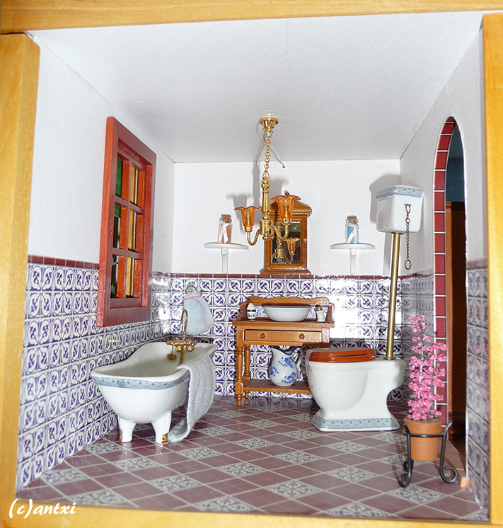

Explore each room of this doll's house to find hidden facts about it.
×
This a very traditional "patio" for a house of this style so we didn't add anything to it.
×
In the kitchen we added the sink and the stove, that we bought at a fair.
×
This house is an exception of our other houses because since we don't have the inside on display we haven't changed as many things inside as in the other houses.
×

This house also came with an electrical installation and we kept it because even when it's closed it looks beautiful with the lights on.
×
This house was sold as a kit taking inspiration from a house belonging to a doll's house museum in Malaga, Spain.
×
This is the only house where we've kept the original facade as we consider it to be quite pretty.